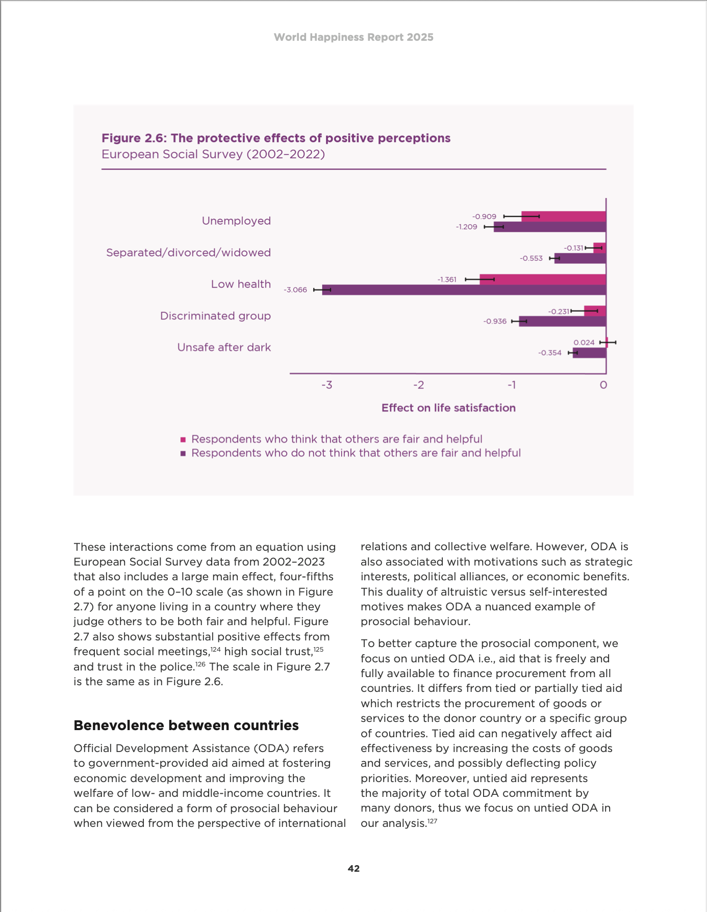

05:00
PDFs with Typst
Hello, Typst!

Learn more: Typst in Quarto
Hello, Typst!
To use Typst with Quarto, set the format in the YAML of your Quarto document:
Learn more: Typst in Quarto
Building PDFs
Page layout
Control the size of the page (papersize), the page margins (margin), and the number of columns used for page content (columns):
Learn more: Page Layout
Margins
Edit the margin’s horizontal direction (x) and vertical direction (y):
Can also use relative length:
Learn more: Margins
Paper Size
Learn more: Supported page sizes
More options
Table of contents
Section numbering
Use number-depth:
Learn more: Section Numbering, Table of Contents
Typst blocks
Add a .block class to change appearance of blocks:
Learn more: Typst Blocks
Typst and fonts
Check what fonts are available on your system with:
Set additional paths using font-paths:
Learn more: Font Support
Branding Typst with brand.yml
Color
Use colors from the _brand.yml file in Typst using brand-color:
Learn more: Typst Brand YAML
Fonts
Quarto will download fonts from Google Fonts and put them in the Typst fonts path if they are specified in the typography.fonts section of _brand.yml using source: google.
Fonts
| base | headings | title1 | subtitle | monospace-inline | monospace-block | link | |
|---|---|---|---|---|---|---|---|
| family | ✓ | ✓ | ✓ | ✓ | ✓ | ✓ | NA |
| size | ✓ | NA | NA | NA | ✓ | ✓ | NA |
| weight | ✓ | ✓ | ✓ | ✓ | ✓ | ✓ | ✓ |
| style | NA | ✓ | ✓ | ✓ | NA | NA | NA |
| color | ✓ | ✓ | ✓ | ✓ | ✓ | ✓ | ✓ |
| background-color | NA | NA | NA | NA | ✓ | ✓ | ✓ |
| decoration | NA | NA | NA | NA | NA | NA | ✓ |
| line-height | ✓ | ✓ | ✓ | ✓ | NA | ✓ | NA |
Learn more: Typst Brand YAML
Logo
The Typst implementation allows customization of the logo position at the document level:
Learn more: Logo Customization
Your turn
- In your document’s YAML header, change the format option from its current value (e.g.,
html) totypst. - Change the number of columns used for the page content to 2 using
columns. - Add a block to a section of the text and fill it with the
tertiarycolor.
Customizing templates
Custom Typst formats
Typst allows you to define your own templates to produce highly customized documents.

{kind=link}
{kind=link}
{kind=link}
Learn more: Custom Typst Formats
Custom Typst formats
| Format | Usage |
|---|---|
| Poster | quarto use template quarto-ext/typst-templates/poster |
| IEEE | quarto use template quarto-ext/typst-templates/ieee |
| AMS | quarto use template quarto-ext/typst-templates/ams |
| Letter | quarto use template quarto-ext/typst-templates/letter |
| Fiction | quarto use template quarto-ext/typst-templates/fiction |
| Dept News | quarto use template quarto-ext/typst-templates/dept-news |
Learn more: Custom Typst Formats
Creating a new Typst format
Use the quarto create command to get started:
Choose typst as the base format and provide a name for the extension.
Learn more: Create a Format
Creating a new Typst format
| File | Description |
|---|---|
_extension.yml |
Basic extension metadata (name, author, description, etc.) and format definition. |
README.md |
Documentation on how to install and use the format. |
template.qmd |
A starter document that demonstrates the basics of the format. |
typst-template.typ |
The core Typst template function (documentation on creating Typst templates can be found here: https://typst.app/docs/tutorial/making-a-template/). |
typst-show.typ |
File that calls the template’s function (mapping Pandoc metadata to function arguments). |
Learn more: Making a template, Awesome Typst
typst-show.typ
./_extensions/article/typst-show.typ
// Typst custom formats typically consist of a 'typst-template.typ' (which is
// the source code for a typst template) and a 'typst-show.typ' which calls the
// template's function (forwarding Pandoc metadata values as required)
//
// This is an example 'typst-show.typ' file (based on the default template
// that ships with Quarto). It calls the typst function named 'article' which
// is defined in the 'typst-template.typ' file.
//
// If you are creating or packaging a custom typst template you will likely
// want to replace this file and 'typst-template.typ' entirely. You can find
// documentation on creating typst templates here and some examples here:
// - https://typst.app/docs/tutorial/making-a-template/
// - https://github.com/typst/templates
#show: doc => article(
$if(title)$
title: [$title$],
$endif$
$if(subtitle)$
subtitle: [$subtitle$],
$endif$
$if(by-author)$
authors: (
$for(by-author)$
$if(it.name.literal)$
( name: [$it.name.literal$],
affiliation: [$for(it.affiliations)$$it.name$$sep$, $endfor$],
email: [$it.email$] ),
$endif$
$endfor$
),
$endif$
$if(date)$
date: [$date$],
$endif$
$if(lang)$
lang: "$lang$",
$endif$
$if(region)$
region: "$region$",
$endif$
$if(abstract)$
abstract: [$abstract$],
abstract-title: "$labels.abstract$",
$endif$
$if(margin)$
margin: ($for(margin/pairs)$$margin.key$: $margin.value$,$endfor$),
$endif$
$if(papersize)$
paper: "$papersize$",
$endif$
$if(mainfont)$
font: ("$mainfont$",),
$elseif(brand.typography.base.family)$
font: $brand.typography.base.family$,
$endif$
$if(fontsize)$
fontsize: $fontsize$,
$elseif(brand.typography.base.size)$
fontsize: $brand.typography.base.size$,
$endif$
$if(title)$
$if(brand.typography.headings.family)$
heading-family: $brand.typography.headings.family$,
$endif$
$if(brand.typography.headings.weight)$
heading-weight: $brand.typography.headings.weight$,
$endif$
$if(brand.typography.headings.style)$
heading-style: "$brand.typography.headings.style$",
$endif$
$if(brand.typography.headings.color)$
heading-color: $brand.typography.headings.color$,
$endif$
$if(brand.typography.headings.line-height)$
heading-line-height: $brand.typography.headings.line-height$,
$endif$
$endif$
$if(section-numbering)$
sectionnumbering: "$section-numbering$",
$endif$
pagenumbering: $if(page-numbering)$"$page-numbering$"$else$none$endif$,
$if(toc)$
toc: $toc$,
$endif$
$if(toc-title)$
toc_title: [$toc-title$],
$endif$
$if(toc-indent)$
toc_indent: $toc-indent$,
$endif$
toc_depth: $toc-depth$,
cols: $if(columns)$$columns$$else$1$endif$,
doc,
)typst-template.typ
./_extensions/article/typst-template.typ
// This is an example typst template (based on the default template that ships
// with Quarto). It defines a typst function named 'article' which provides
// various customization options. This function is called from the
// 'typst-show.typ' file (which maps Pandoc metadata function arguments)
//
// If you are creating or packaging a custom typst template you will likely
// want to replace this file and 'typst-show.typ' entirely. You can find
// documentation on creating typst templates and some examples here:
// - https://typst.app/docs/tutorial/making-a-template/
// - https://github.com/typst/templates
#let article(
title: none,
subtitle: none,
authors: none,
date: none,
abstract: none,
abstract-title: none,
cols: 1,
margin: (x: 1.25in, y: 1.25in),
paper: "us-letter",
lang: "en",
region: "US",
font: "libertinus serif",
fontsize: 11pt,
title-size: 1.5em,
subtitle-size: 1.25em,
heading-family: "libertinus serif",
heading-weight: "bold",
heading-style: "normal",
heading-color: black,
heading-line-height: 0.65em,
sectionnumbering: none,
pagenumbering: "1",
toc: false,
toc_title: none,
toc_depth: none,
toc_indent: 1.5em,
doc,
) = {
set page(
paper: paper,
margin: margin,
numbering: pagenumbering,
)
set par(justify: true)
set text(lang: lang,
region: region,
font: font,
size: fontsize)
set heading(numbering: sectionnumbering)
if title != none {
align(center)[#block(inset: 2em)[
#set par(leading: heading-line-height)
#if (heading-family != none or heading-weight != "bold" or heading-style != "normal"
or heading-color != black) {
set text(font: heading-family, weight: heading-weight, style: heading-style, fill: heading-color)
text(size: title-size)[#title]
if subtitle != none {
parbreak()
text(size: subtitle-size)[#subtitle]
}
} else {
text(weight: "bold", size: title-size)[#title]
if subtitle != none {
parbreak()
text(weight: "bold", size: subtitle-size)[#subtitle]
}
}
]]
}
if authors != none {
let count = authors.len()
let ncols = calc.min(count, 3)
grid(
columns: (1fr,) * ncols,
row-gutter: 1.5em,
..authors.map(author =>
align(center)[
#author.name \
#author.affiliation \
#author.email
]
)
)
}
if date != none {
align(center)[#block(inset: 1em)[
#date
]]
}
if abstract != none {
block(inset: 2em)[
#text(weight: "semibold")[#abstract-title] #h(1em) #abstract
]
}
if toc {
let title = if toc_title == none {
auto
} else {
toc_title
}
block(above: 0em, below: 2em)[
#outline(
title: toc_title,
depth: toc_depth,
indent: toc_indent
);
]
}
if cols == 1 {
doc
} else {
columns(cols, doc)
}
}
#set table(
inset: 6pt,
stroke: none
)Recreating the World Happiness Report
World Happiness Report example

Link to World Happiness Report
Example report with brand.yml
Advanced styling
With brand.yml:
✅ Table of contents
✅ Simple heading styling
✅ Logo placement customization
✅ Fonts
❌ Cover page
❌ Advanced headings
Learn more: Advanced Styling
Adding a title page with image
Set rules:
typst-template.typ
#let title_page(title)={
page(margin: 0in,
background: image("cover.jpg", height: 100%, fit: "cover"))[
#set text(fill: white)
#place(center + horizon, dy: -2.5in)[
#set align(center + horizon)
#block(width: 100%, fill: rgb("#983e91"), outset: 5em)[
#text(weight: "light", size: 36pt, title)
]
]
#place(center + bottom, dy: -40pt)[
#block(height: 40pt)[
#image("whr_logo.png")
]
]
]
}Your turn
Install the whr-typst-template:
Open the _extensions/whr/typst-show.typ and _extensions/whr/typst-template.typ files to examine their contents.
05:00

pos.it/quarto-brand-conf25